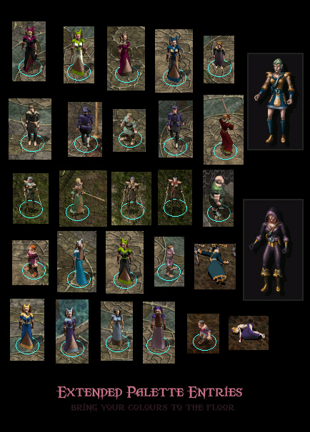

This component adds new colour gradients to Infinity Engine games, raising the count of available colours from 116 to 256. It also includes a new random colour table making use of them for Baldur's Gate II and new colour set files for Icewind Dale II, giving you more skin/hair colour choices for the various races.
Also fixes a few minor problems with standard gradients.

Supported:
BGII SoA, BGII ToB, IWD HoW, IWD TotL, IWD II
To Install:
Simply extract these files anywhere and run.
How does this work?
The installation process can be broken down into two parts:
Infinity Engine games allow you to individually set palettes with some of the prerendered animations - hair, skin, or clothing colour on your characters for instance.
These colours are taken from a BMP image line-by-line, where each line represents one gradient. The BMP file is called MPALETTE for the 12 shade BAM images, and MPAL256 for PLT images. The original palette files are 120 lines long, the last four of which are uniform grey (not set). If a line that does not exist is called by your game, it will crash. This is not a purely hypothetical situation, as in my own experience I have had mods crash due to invalid colour references.
The colour gradients are set in character and item files by a single byte, allowing 256 distinct values. If the standard BMPs are expanded to fit this, it is impossible to crash the game with any colour entry you can set. And if that isn't nice enough, the additional entries are actually imported and displayed properly by the game.
The first part of the install thus is to add palette files which make use of all 256 entries, allowing greater variety in item and character colours while preventing crashes from invalid references.
There is, however, one problem with adding colour entries beyond the standard values, which is not readily apparent. As it happens, the Infinity Engine draws colours from two different sources: Any actual rendered image is taken from the corresponding palette BMPs, while any coloured font rendering (in the dialogue box) - for *some* reason - is hardcoded into the executable.
The colour values in the executable are read with an absolute offset, so invalid entries will not crash your game, but do lead to unpredictable font colours (a lot appearing black, making the font pretty much impossible to read). There are a few extra entries after the original 116, but they stop well before 256.
The second part of the install addresses this by patching the executable to have proper font colours for all 256 entries. It does not serve any purpose at all beyond that.
But.. wait, doesn't the game have random colour entries starting at #200?
Yes, indeed true. Baldur's Gate II (and only Baldur's Gate II) has a file called RANDCOLR.2da allowing you to set 'random colour entries'. It is essentially a table allowing you to set various colour entries to another entry which are then picked randomly. By default the game uses colours 200 and onward (which do not have any actual colour gradient information).
Random colours are evaluated for character colours (characters set on CRE or CHR files) only, and do not conflict with the new entries. This means that on a character, colour #200 will use the random colour entry for #200 as usual, while on an item #200 will use the new 1pp colour gradient.
Interesting side note: If a colour that has an entry in RANDCOLR.2da is set as an entry of a random colour itself, it will show up as the intended colour value.
Apologies if this is confusing, I know. The 1pp palette tool should hopefully keep confusion to a minimum though, as it alerts you of these things.
This installer allows you to easily customise or edit the palette installed.
You can edit the actual gradients in the files MPAL256 and MPALETTE with any image editing tool of your choice.
Simply replace them in files/ in the install directory.
RANGES12 is actually *not* used by the game whatsoever, but it *is* used by NearInfinity, so it's best to replace it as well to properly support editing in NI.
Last but not least, the file __setting.bmp contains the colour information that will be written to the executable (for font colours). Please note that in contrast to the mpalette files, the actual image is irrelevant; the colour table of the BMP is what is read and patched. Also note that the file is not used by the game in any way, it is merely read and evaluated by the included installer.
Keep in mind that if you include a new entry in a mod (120+) it *will* crash installs that do not have extended MPALETTE and MPAL256 files (the 1pp palette tool will also warn you if you are setting new gradients).
Since the content of these files is not touched by any other mods (that I am aware of) and replacing them is as non-intrusive as it gets the easiest way to avoid this is to include them with your mod and install them.
To avoid unnecessary overwriting of the files it would be best to add a simple file size check: If the file sizes are 9,272 bytes (MPALETTE) and 196,664 bytes (MPAL256) they already contain a full 256 colour set and need no further patching.
Of course, if you use them for a major character colour (and this is the only situation where it would be noticeable) this will not fix the dialogue font colour.
{kind=link}